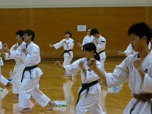
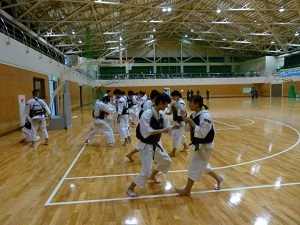
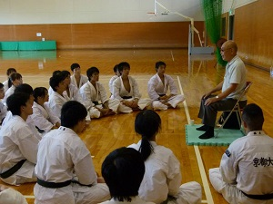
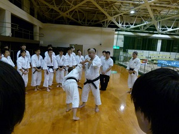
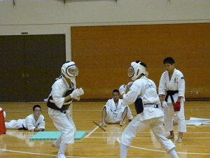
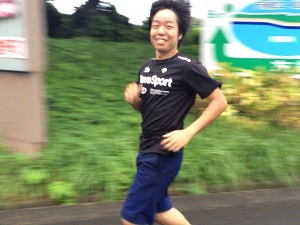
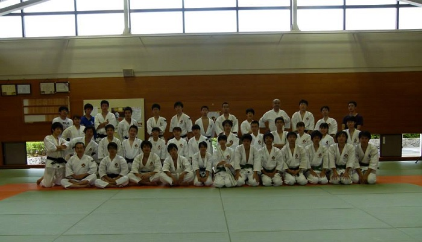

京都大学体育会少林寺拳法部
写真
夏合宿（2015年度）
今年も天橋立で合宿だー！しっかり上手くなりましょう。写真は、逆突きをした時の体勢をキープして形を整える練習です。
合宿恒例胴ラッシュ。体育館の端から端に相手を追いやる練習です。相手を吹っ飛ばせ！！
今年も、この部の創始者(である後神（ごこう）先輩にご講話して頂きました！この部の成り立ちを聞いて、一回生たちのモチベーションも上がったようです。
八木監督による術科指導です！！やはり監督の技はすごいです．．．。少しでも監督の技術を吸収しようと、みんな真剣です。
１、２回生乱捕大会の様子です。しっかりと安全に考慮したうえで日ごろの練習の成果をぶつけあいます。ちなみに女子の優勝は濱田、一回生男子の優勝は小畑、２回生男子は花谷でした。3回生はヤジを飛ばすだけです。
15kmマラソン大会です。天橋立を走ります。迷子になった者もいましたが、全員無事走り終えることができました。なお、今年もOB、OGさんにコース案内等の多大なるご協力をいただきました！本当にありがとうございました！
集合写真です。みんな恰好よくキマってます。夏合宿お疲れさま！！